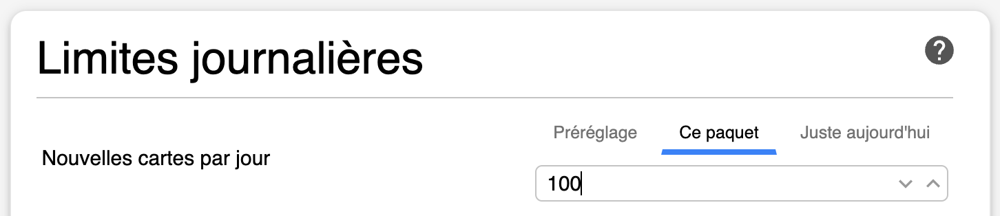

Bienvenue chez Bref, l’atelier de conversation !
На встречу можно прийти как есть, не готовясь. Но если у вас есть время и силы на подготовку, я бы организовала её так:
- ⬇ Скачать колоду Anki и пройти её целиком. Посмотрите на лицевую сторону карточки и попробуйте догадаться, какое там спрятано выражение. Затем переверните и сравните. Если вы угадали и уже знаете выражение с карточки, её можно смело удалять. Если не угадали — карточку лучше оставить. Даже если вы посмотрели на выражение и подумали «ой, точно, ну я это знаю», спросите себя: а точно ли оно у меня в активном словарном запасе?
В этой колоде 73 карточки. Чтобы увидеть их все за раз, откройте настройки колоды и поставьте лимит новых карточек для этой колоды на 73 или больше, как на скриншоте.

- Проделать упражнения. Они содержат лексику из колоды и помогут вам её закрепить.
- Послушать подкаст. Как будет приятно слушать и узнавать лексику, с которой вы уже работали!
Bonne préparation et bonne écoute !
Cliquez sur une heure pour y aller.
Expressions surlignées : celles que l’on retrouve dans les activités.
Réponses autocorrectives. Pendant que vous écrivez, la case reste rouge ; dès que la réponse est juste, elle devient verte. Orange = juste, à l'accent près. Bloqué·e ? Cliquez sur « Vérifier » pour voir les réponses.
Discussion
Le contenu de cet onglet sera ajouté prochainement.
Feedback
Le contenu de cet onglet sera ajouté prochainement.